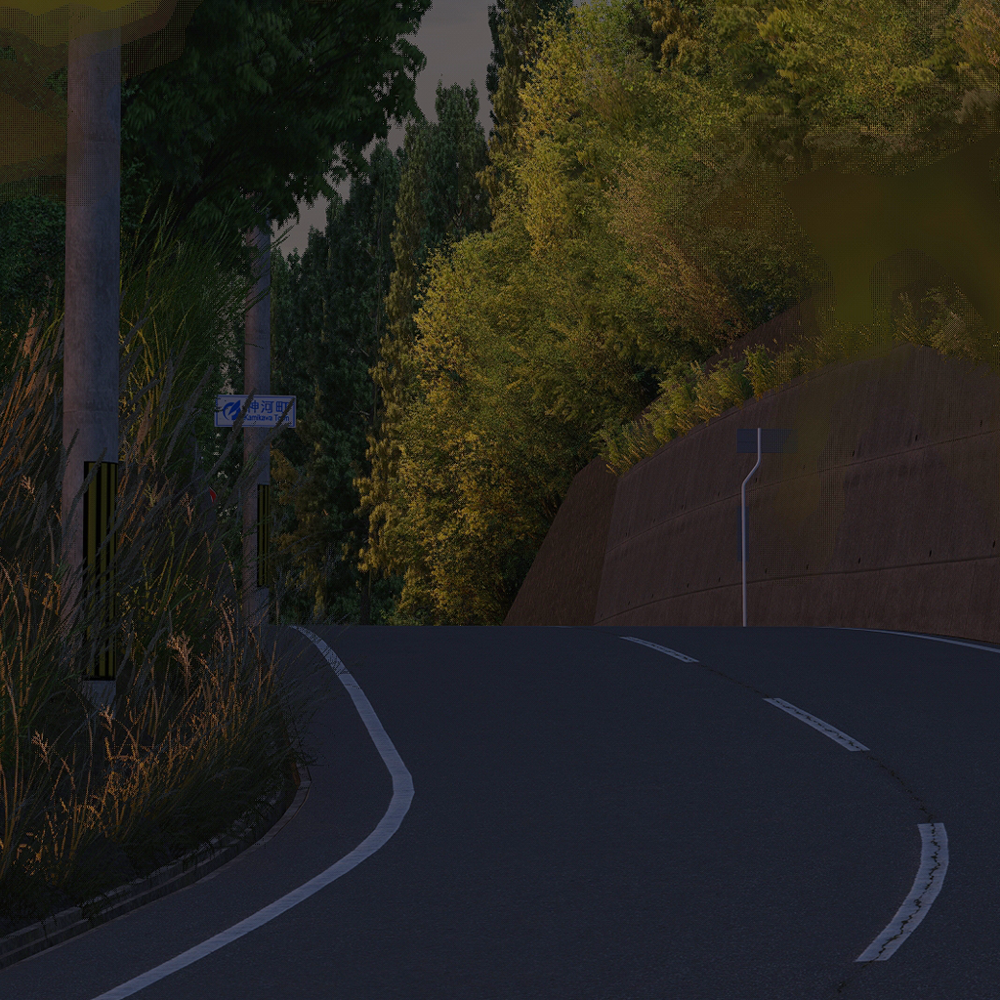

Добрый день, дорогой друг. Если ты это читаешь, то тебе каким-то образом стал известен точный адрес этого сайта, и, скорее всего, ты интересуешься уличными гонками. Это значит, что ты попал в проект Touge Alliance.
Мы - группа людей, организовывающая соревнования, в которых ты сможешь проверить себя и подзаработать деньжат. Не пытайся разузнать наши личности, у тебя просто этого не получится, да и тебе это не особенно нужно. И можешь не сомневаться, скоро сайт будет обновлён с информацией о следующей встрече.

Sakanotsuji Touge (下峠)
Slow(96%), 20°C, 27°C, Windy
- 1 место:
- 2 место:
- 3 место:
? (?峠)
?(?%), ?°C, ?°C, ?